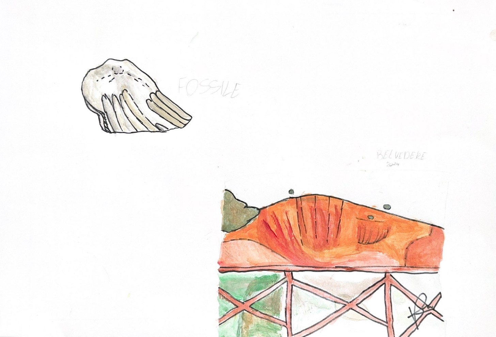

<script src="head.js"></script>
<script src="inner.js"></script>

<main id="main">

    <!-- ======= Breadcrumbs ======= -->
    <section id="breadcrumbs" class="breadcrumbs">
        <div class="container">

            <ol>
                <li><a href="index.html">Home</a></li>
                <li>Cava di Ginosa</li>
            </ol>
            <h2>Cava di Ginosa</h2>

        </div>
    </section><!-- End Breadcrumbs -->
    ]]
    <!-- ======= Portfolio Details Section ======= -->
    <section id="portfolio-details" class="portfolio-details">
        <div class="container">

            <div class="row gy-4">

                <div class="col-lg-6">
                    <div class="portfolio-details-slider swiper">
                        <div class="swiper-wrapper align-items-center">
                            <div class="swiper-slide">
                                
                            </div>
                            <div class="swiper-slide">
                                
                            </div>
                            <div class="swiper-slide">
                                
                            </div>
                            <div class="swiper-slide">
                                
                            </div>
                        </div>
                        <div class="swiper-pagination"></div>
                    </div>
                </div>

                <div class="col-lg-6">
                    <div class="portfolio-info">
                        <h3>Informazioni</h3>
                        <ul>
                            <li><strong>Categoria</strong>: Cava</li>
                            <li><strong>Facebook</strong>: <a
                                    href="https://www.facebook.com/ginosaanticaemoderna/posts/ginosa-antica-e-modernavista-del-percorso-naturalistico-cave-di-pietra-il-mondo-/3481462968629543">Ginosa
                                antica e moderna</a></li>
                        </ul>
                    </div>
                    <div class="portfolio-description">
                        <h2>Descrizione</h2>
                        <p>
                            È un luogo senza tempo, pervaso dal fascino antico: fra case grotta e chiese rupestri</p>
                    </div>
                </div>

            </div>

            <div class="row gy-4">
                <div class="col-lg-12">
                    <div class="portfolio-description">
                        <h2>Le cave</h2>
                        <p>
                            Le cave di Ginosa nascono tra il periodo miceneo e la nascita di Cristo, in un periodo molto
                            lungo perché create naturalmente.<br/>
                            Anticamente venivano molto utilizzate perché vicino ad un fiume, ormai prosciugato.
                            Curiosa è l’evoluzione della loro storia; alle origini le abitazioni erano situate nelle
                            grotte, nel versante delle cave in tufo, ma,
                            a seguito di un’idea che prevedeva il riutilizzo del tufo scavato, si è pensato di costruire
                            le abitazioni esterne alle grotte e confinanti ad una chiesa. Ad oggi l’utilizzo delle cave
                            è per lo più turistico e culturale.
                            <br/>
                            <br/>
                            Il luogo di culto per eccellenza, all’epoca, erano le chiese rupestri scavate nel tufo.
                            Queste erano circondate dalla natura per simboleggiare la vicinanza a Dio. Le due più
                            importanti sono quella di Santa Sofia e quella di Santa Barbara, oggi abbandonate e con una
                            totale assenza di manutenzione, vessate da continui danni causati da vandali e agenti
                            atmosferici.<br/>
                            I due simboli più rilevanti sono:
                            <ul>
                                <li>i due pesci, il primo pronto ad ascoltare l’altro che gli parla;</li>
                                <li>l’affresco rappresentante i tre angioletti che circondano il crocifisso per raccogliere il
                                    sangue di Cristo.</li>
                            </ul>
                        </p>
                        <p class="firma">Redattori</p>
                    </div>
                </div>
            </div>

        </div>
    </section><!-- End Portfolio Details Section -->

</main><!-- End #main -->

<script src="footer.js"></script>